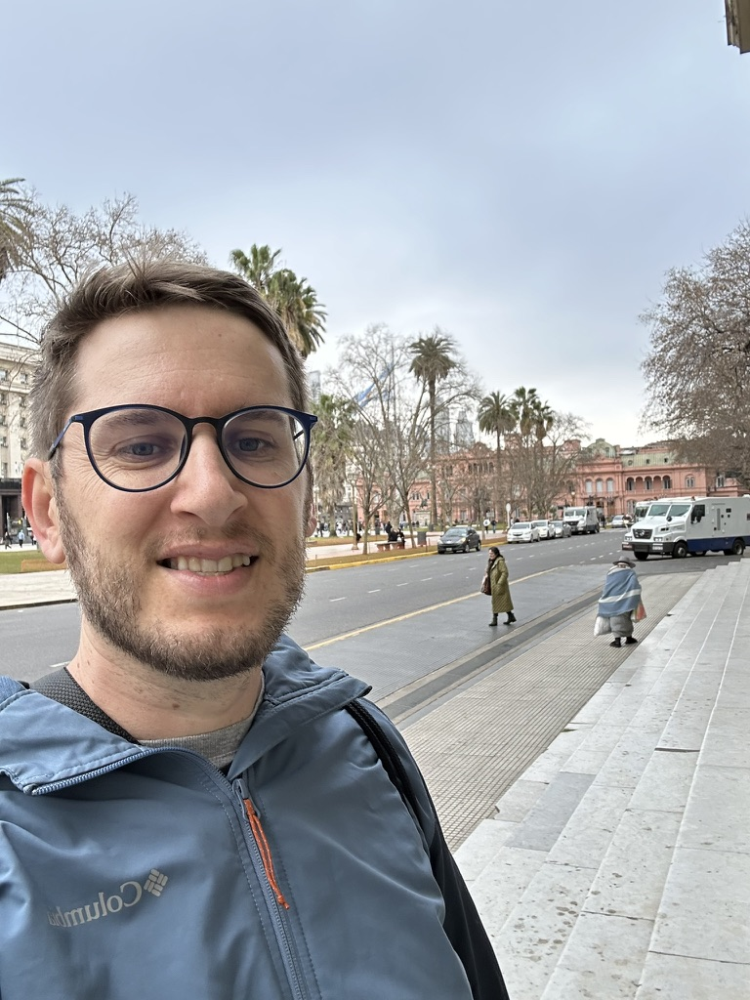

Rafael Parizi, Ph.D. (he/him)
>> Software Engineering Researcher
Investigating the human and creative side of software development — Design Thinking, product discovery, user experience, and Artificial Intelligence in Computer Science education.
About
I am a professor and researcher with more than a decade of experience in Computer Science. My work investigates the human, collaborative, and creative dimensions of software development — with an emphasis on Design Thinking, product discovery, user experience, and Artificial Intelligence applied to Computer Science education.

Researcher & Professor
Passionate about fostering innovation and collaboration, I bridge software engineering research and practice: bringing Design Thinking, discovery, and human-centered methods into how teams build software, and studying how these approaches change the way people learn and work.
- Degree: Ph.D. in Computer Science
- Ph.D. University: Pontifical Catholic University of Rio Grande do Sul (PUCRS)
- Other Degrees: M.Sc. and B.Sc. in Computer Science
- Research focus: Design Thinking in Software Development
- Role: Professor at IFFar, Brazil
- Since: 2012
- Email: rafael (dot) parizi (at) iffar (dot) edu (dot) br
- Currently: Coordinator of the Special Committee on Collaborative Systems (CESC) of the Brazilian Computer Society (SBC), 2026–2028
- Recent roles: Coordinator of the Bachelor's Degree in Information Systems · Member of the Superior Council at IFFar
I hold a Ph.D. with international research experience, including a research period in Germany. I have presented my work at conferences in Brazil, Argentina, Germany, Canada, and Finland.
Over the past decade I have coordinated more than seven research projects and trained professionals for both industry and academia. I also actively contribute to the organization of national and international conferences.
+
Students mentored in Information Technology
+
Research projects led as principal investigator
+
Hours of Computer Science teaching
+
Conferences served as organizing member
+
Hours facilitating Design Thinking workshops
+
Best-paper and reviewer recognitions
Research
My research investigates how human-centered and creative practices shape the way software is designed, built, and taught. These are the lines of inquiry I am currently active in.
Design Thinking in Software Development
How Design Thinking practices can be integrated into software processes to foster innovation, collaboration, and shared understanding within development teams.
Product Discovery & Requirements
Techniques that help teams decide what to build — discovery practices, hypothesis validation, and the bridge between business intent and software requirements.
User Experience in Development Teams
How UX thinking is adopted (or resisted) by software teams, and the human aspects — motivation, communication, empathy — that influence software quality.
AI in Computer Science Education
Using Artificial Intelligence to support and personalize learning in Computer Science, and studying its effects on how students learn to build software.
Computer Vision for Agile Projects
Applying Computer Vision to physical agile artifacts (boards, notes, ceremonies) to generate feedback and increase transparency and efficiency in Agile teams.
Collaborative Systems (CSCW)
Collaborative and social computing applied to software development, connected to my role in the SBC Special Committee on Collaborative Systems (CESC).
Projects & Labs
Research projects and laboratories I currently coordinate, focused on innovative solutions in software engineering, education, and technology.
Lab Ideas — a Design Thinking Laboratory
2020 – CurrentA laboratory dedicated to fostering creativity for software development, connecting students, researchers, and practitioners around discovery and Design Thinking.
Design Thinking in Software Development
2019 – CurrentInvestigating how Design Thinking can drive innovation and collaboration in software development, and how teams adopt these practices in real settings.
Artificial Intelligence in Computer Science Education
2022 – CurrentExploring Artificial Intelligence to innovate and enhance learning in Computer Science education.
Computer Vision Applied to Agile Projects
2023 – CurrentApplying Computer Vision to enhance feedback and efficiency in Agile projects.
Publications
Recent publications on collaborative systems, Design Thinking, human aspects of software engineering, and Computer Science education. For the complete and up-to-date list, please see my Lattes CV and Google Scholar profile.
Journal Articles & Book Chapters
Avaliando a Colaboração no Ensino de Engenharia de Software: Percepções a partir de uma Revisão Rápida
2025 · Journal article
Accepted for publication in the SOL journal.
Parizi, R. B.
DTColab: Design Thinking na Educação com Suporte de Ferramentas Computacionais Colaborativas
2024 · Book chapter
XII Jornada de Atualização em Informática na Educação (JAI), SBC.
Parizi, R. B.; Gouvea, M. T. A.; Dias, A. F. S.
Conference & Workshop Papers — 2024
Brewing Ideas: An Experience Report on the Use of World Cafés to Spin on Collaborative Learning of Software Development Life Cycles
2024
Simpósio Brasileiro de Educação em Computação (EduComp), Brazil.
Dornelles, P. L.; Dantas, J.; Parizi, R.
PIDS: Projetos Integradores em Desenvolvimento de Software como Prática Colaborativa na Curricularização da Extensão
2024
Anais Estendidos do Simpósio Brasileiro de Sistemas Colaborativos (SBSC), Brazil.
Abich, D.; Cavalheiro, B.; Parizi, R.
Oportunidades e Desafios para o Desenvolvimento Colaborativo de Visualizações Narrativas de Dados
2024
Anais Estendidos do Simpósio Brasileiro de Sistemas Colaborativos (SBSC), Brazil.
Correa, C. M.; Parizi, R. B.
Conference & Workshop Papers — 2025
Com Quem Colaboras? Uma Análise Bibliométrica das Redes de Pesquisa em Sistemas Colaborativos na SBC Open Library
2025
Simpósio Brasileiro de Sistemas Colaborativos (SBSC), Brazil.
Pires, A.; Kleinpaul, E.; Parizi, R.
Framework DTColab ON ou OFF? Investigando o uso de sistemas colaborativos na cocriação de soluções no Design Thinking
2025
Simpósio Brasileiro de Sistemas Colaborativos (SBSC), Brazil.
Gouvêa, M. T.; Dias, A. F. S.; Parizi, R.; Motta, C.
On the Use of the Lotus Blossom Technique to Foster Collaboration among Students in Software Development
2025
Simpósio Brasileiro de Sistemas Colaborativos (SBSC), Brazil.
Kleinpaul, E.; Pires, A.; Machado, L.; Parizi, R.
Avaliando a Colaboração no Ensino de Engenharia de Software: Percepções a partir de uma Revisão Rápida
2025
Simpósio Brasileiro de Engenharia de Software (SBES), Recife, Brazil.
Kleinpaul, E.; Parizi, R. B.
From Prompts to Prototypes: Exploring ChatGPT in Collaborative Software Prototyping Education
2025
Brazilian Software Quality Symposium (SBQS), São José dos Campos, Brazil.
Pires, A.; Kleinpaul, E.; Campos, L.; Parizi, R. B.
Academic Service & Recognition
Roles and contributions to the research community, program committees, and my institution.
Community & Committees
Coordinator — Special Committee on Collaborative Systems (CESC)
2026 – 2028
Brazilian Computer Society (SBC)
Leading the national research community on collaborative systems and CSCW applied to software development. Previously Co-Coordinator.
Conference organization & program committees
National and international venues
Organizing-committee member for 8+ conferences and reviewer for software engineering and computing education venues, with best-paper and outstanding-reviewer recognitions.
International research experience
Germany (research period)
Work presented at conferences in Brazil, Argentina, Germany, Canada, and Finland.
Institutional Roles — IF Farroupilha (recent)
Coordinator — Bachelor's Degree in Information Systems
Federal Institute Farroupilha (IFFar)
Led the undergraduate program: curriculum, faculty coordination, and student support.
Member — Superior Council (Conselho Superior)
Federal Institute Farroupilha (IFFar)
Served on the highest deliberative body of the institution.
Research supervision
Undergraduate and technical levels
40+ students mentored in Information Technology; 7+ research projects coordinated as principal investigator over the past decade.
Teaching
Teaching Computer Science since 2012, with more than 10,000 hours in the classroom and a focus on software engineering, discovery, and human-centered design.
Courses & Topics
Software Engineering
Undergraduate — Information Systems, IFFar
Software processes, requirements, agile methods, and quality.
Design Thinking & Product Discovery
Undergraduate and extension courses
200+ hours facilitating Design Thinking workshops for students and practitioners.
User Experience & Human-Computer Interaction
Undergraduate — Information Systems, IFFar
Usability, interaction design, and evaluation methods.
Mentoring & Outreach
Undergraduate research (scientific initiation)
2012 – Present
Supervising students on Design Thinking, AI in education, and Computer Vision for agile projects.
Capstone and final projects
Information Systems, IFFar
Advising software projects that connect research questions with real problems.
Community & K-12 outreach
Ongoing
Bringing computing and design activities to the wider community around São Borja.
Contact
Open to research collaborations, student supervision, and invited talks. Feel free to reach out.
Work Address
Federal Institute Farroupilha — São Borja Campus
Otaviano Castilhos Mendes Street, 355, São Borja - RS, Brazil